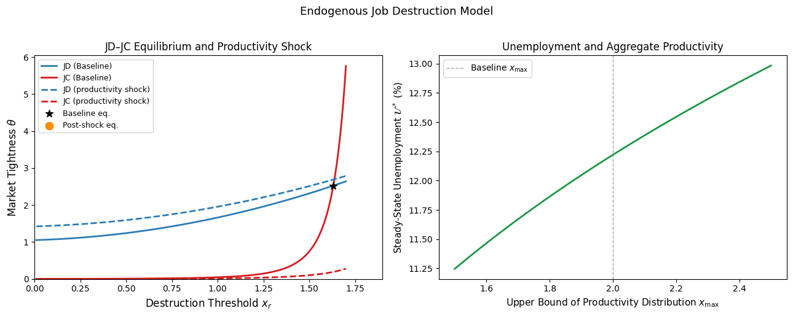

Labor Search Extensions#
Endogenous Job Destruction#
Motivation#
In the baseline model, job destruction occurs at an exogenous constant rate \(s\): matches are dissolved randomly, independent of the productivity of the job. This is a useful simplification, but it abstracts from an important feature of real labor markets. Firms do not dissolve matches randomly — they dissolve them when the match becomes insufficiently productive to justify continued employment. A negative shock to job-specific productivity reduces the surplus from the match; if the shock is severe enough, the surplus turns negative and both parties agree to separate.
This section extends the baseline model to incorporate endogenous job destruction, following Mortensen and Pissarides (1994). The key modification is to allow job-specific productivity to vary stochastically over the life of a match. Each filled job draws a new idiosyncratic productivity level at random intervals; if the draw is sufficiently low, the match is dissolved. The separation rate is no longer a parameter but an equilibrium outcome — determined jointly with market tightness by the job creation and job destruction conditions.
The extended model delivers several predictions absent from the baseline:
Separations are concentrated among low-productivity matches, consistent with the empirical finding that job destruction is selective rather than random.
The job destruction margin responds endogenously to aggregate shocks, amplifying cyclical fluctuations in unemployment.
Job creation and job destruction can move in opposite directions following a shock — a feature of the data that the exogenous destruction model cannot generate.
Environment#
The matching technology, preferences, and free entry assumption are unchanged from the baseline model. We modify the production side as follows.
When a worker and firm first meet, the productivity of their match is drawn from a distribution \(G(\cdot)\) with support \([x_{\min}, x_{\max}]\) and density \(g(\cdot)\). While the match continues, new idiosyncratic productivity shocks arrive at Poisson rate \(\mu > 0\), with each new draw taken independently from the same distribution \(G\). The arrival of a new shock does not automatically dissolve the match — instead, both parties observe the new productivity and decide whether to continue or separate. Since wages are determined by Nash bargaining after each shock, the continuation decision is jointly optimal: a match continues if and only if doing so is mutually beneficial.
Bellman Equations with Stochastic Productivity#
Since the productivity of a filled job is now a random variable, the values of a filled job and a vacancy must be written as functions of the current productivity draw \(x\).
Firm’s Bellman equations. The value of a filled job with current productivity \(x\) satisfies:
The flow return is current profit \(x - w(x)\). At Poisson rate \(\mu\), a new productivity draw \(x'\) arrives. The firm then chooses optimally: if \(J_\pi(x') \geq J_v\), the match continues at the new productivity; if \(J_\pi(x') < J_v\), the match is dissolved and the firm returns to vacancy posting. The max operator captures this optimal continuation decision. The value of a vacant job satisfies:
Worker’s Bellman equations. Symmetrically, the value of employment at productivity \(x\) and the value of unemployment satisfy:
The Destruction Threshold#
Since the value of a filled job is increasing in productivity — more productive matches generate higher profits — there exists a reservation productivity \(x_r\) such that the firm is indifferent between continuing and dissolving the match:
where the second equality imposes free entry. For \(x \geq x_r\), the match continues; for \(x < x_r\), the match is dissolved. Since Nash bargaining implies that the worker’s and firm’s surpluses move together — the sharing rule \((1-\alpha)(W_n - W_u) = \alpha(J_\pi - J_v)\) holds at every productivity level — the threshold \(x_r\) also satisfies \(W_n(x_r) = W_u\): at the destruction margin, the worker is indifferent between employment and unemployment. Both parties therefore agree on when to dissolve the match, ruling out any holdout problem.
To verify that \(J_\pi(x)\) is indeed monotone, differentiate the Bellman equation (13) with respect to \(x\):
Under Nash bargaining the wage adjusts with productivity, but since workers receive only fraction \(\alpha\) of any productivity gain, \(w'(x) = \alpha < 1\), so \(dJ_\pi/dx = (1-\alpha)/(r+\mu) > 0\). The value of a filled job is strictly increasing in \(x\), confirming the existence and uniqueness of the threshold \(x_r\).
Knowing that both parties dissolve the match whenever \(x < x_r\), we can replace the \(\max\) operators in the Bellman equations with integrals over the continuation region \([x_r, x_{\max}]\):
The Total Match Surplus#
The analysis is greatly simplified by working with the total match surplus \(S(x) \equiv J_\pi(x) - J_v + W_n(x) - W_u = J_\pi(x) + W_n(x) - W_u\), where the second equality uses \(J_v = 0\). Adding the firm and worker Bellman equations and canceling the wage terms:
where \(E[S] \equiv \int_{x_r}^{x_{\max}} S(x')\,dG(x')\) is the expected surplus conditional on continuation. Rearranging:
The surplus is linear in the current productivity draw \(x\), with slope \(1/(r+\mu)\). Since \(S(x_r) = 0\) at the destruction threshold, we can write the surplus in the particularly clean form:
where the last equality uses \(E[S] = S(x_r) = 0\) only if \(x_r = E[x | x > x_r]\), which is not generally true. More carefully, the candidate solution \(S(x) = (x - x_r)/(r+\mu)\) is verified by substituting back into (19):
This confirms \(S(x) = (x - x_r)/(r + \mu)\), provided \(x_r\) satisfies a consistency condition which we derive next.
The Job Destruction Condition#
Evaluating the surplus expression at the threshold \(x_r\) where \(S(x_r) = 0\) and substituting \(rW_u\) from equation (18):
Using the expression for \(rW_u\) derived from the free entry condition, the Nash sharing rule, and the worker’s Bellman equation:
Substituting yields the job destruction condition:
The left-hand side is the flow value of being unemployed plus the option value workers receive from being in a tight labor market. The right-hand side is the value of the match at the destruction margin: the current productivity \(x_r\) plus the expected capital gain from future draws above \(x_r\), discounted at rate \(r + \mu\). The match is dissolved precisely when the value of the outside option equals the value of the marginal match.
Several properties of the JD condition follow immediately:
The right-hand side is decreasing in \(x_r\): a higher threshold means fewer future draws exceed \(x_r\), reducing the option value of continuation. This gives the JD condition a negative relationship between \(\theta\) and \(x_r\), as plotted below.
The left-hand side is increasing in \(\theta\): tighter markets improve workers’ outside options, raising the minimum productivity required to justify continued employment.
Together, these imply a downward-sloping JD locus in \((\theta, x_r)\) space: tighter markets raise the threshold for match continuation.
The Job Creation Condition#
For job creation, the free entry condition \(J_v = 0\) requires the expected value of a new match to cover expected recruiting costs:
where the second equality uses the Nash sharing rule \(J_\pi = (1-\alpha)S\) and the third substitutes the surplus expression. The job creation condition says that the expected recruiting cost must equal the firm’s expected share of the match surplus.
The JC locus is upward-sloping in \((\theta, x_r)\) space. A higher destruction threshold \(x_r\) reduces the expected surplus from a new match (fewer productivity draws are acceptable), reducing the incentive to post vacancies and therefore reducing \(\theta\). Equivalently, reading the condition as determining \(x_r\) for a given \(\theta\): a tighter market (\(q(\theta)\) falls) raises recruiting costs, requiring a higher expected surplus, which is achieved only when matches are more selective — a higher \(x_r\).
Equilibrium#
The equilibrium in the extended model is a pair \((\theta^*, x_r^*)\) satisfying the JD and JC conditions simultaneously. Existence and uniqueness follow from the fact that the JD locus is downward-sloping and the JC locus is upward-sloping in \((\theta, x_r)\) space, ensuring a unique intersection under standard regularity conditions.

Given \((\theta^*, x_r^*)\), the steady-state unemployment rate is:
This generalizes the baseline formula \(\mathcal{U}^* = s/(s + f(\theta))\), replacing the exogenous separation rate \(s\) with the endogenous job destruction rate \(\mu G(x_r^*)\): shocks arrive at rate \(\mu\), and a fraction \(G(x_r^*)\) of them are sufficiently bad to trigger destruction. When \(x_r^*\) is low — matches are rarely dissolved — the effective separation rate is low and unemployment is low; when \(x_r^*\) is high, the reverse holds.
Comparative Statics: A Positive Productivity Shock#
To illustrate the dynamics of the model, consider the effect of a permanent increase in aggregate productivity — modeled as a uniform upward shift in all productivity draws, so that \(x\) is replaced by \(x + \Delta\) for all matches. The equilibrium responses are:
Impact on the JD locus. A higher productivity level raises the right-hand side of the JD condition for any given \(x_r\), increasing the value of continuing the match. Equivalently, the threshold \(x_r\) consistent with indifference at the destruction margin falls: some matches that were previously dissolved are now worth continuing. The JD locus shifts downward and to the right, reducing \(x_r^*\) for any given \(\theta\).
Impact on the JC locus. Higher productivity raises the expected surplus from a new match, increasing the incentive to post vacancies. The JC locus shifts upward and to the right, raising \(\theta^*\) for any given \(x_r\).
Equilibrium response. Both shifts move \(\theta^*\) upward: market tightness rises unambiguously. The destruction threshold \(x_r^*\) falls unambiguously: matches that were marginal before the shock are now retained. The two effects reinforce each other in their impact on unemployment:
The rise in \(\theta^*\) increases the job-finding rate \(f(\theta^*)\), raising the outflow from unemployment.
The fall in \(x_r^*\) reduces the effective separation rate \(\mu G(x_r^*)\), reducing the inflow to unemployment.
Steady-state unemployment falls through both channels simultaneously — a result that contrasts with the baseline model, where a productivity shock affects unemployment only through the job-finding rate.
Transitional dynamics. The adjustment to the new steady state is not instantaneous. On impact, the destruction threshold falls immediately — ongoing matches are repriced by Nash bargaining, and some matches that would have been dissolved now survive. The job creation response is slower, since it requires the stock of vacancies to build up and new matches to form. This asymmetry — fast destruction adjustment, slow creation adjustment — implies that the job destruction rate responds earlier in the cycle than the job creation rate, consistent with empirical evidence that job destruction leads job creation over the business cycle.
The role of non-employment income. The response of the equilibrium to changes in non-employment income \(z\) is qualitatively opposite to the productivity response: higher \(z\) raises workers’ outside options, increasing the threshold \(x_r^*\) (more matches are dissolved) and reducing \(\theta^*\) (fewer vacancies are posted). Unemployment rises through both channels. This symmetry — productivity and non-employment income entering the JD condition with opposite signs — is a general feature of the model and has direct implications for the design of unemployment insurance.
Numerical Illustration#
The following code solves the endogenous job destruction model numerically for a parametric distribution \(G\), plots the JD and JC loci, and illustrates the equilibrium response to a productivity shock.
import numpy as np
import matplotlib.pyplot as plt
from scipy.optimize import brentq
from scipy.integrate import quad
# ──────────────────────────────────────────────
# Parameters
# ──────────────────────────────────────────────
A = 1.0 # matching efficiency
beta = 0.5 # vacancy elasticity
r = 0.004 # monthly discount rate
mu = 0.05 # shock arrival rate
gamma = 0.5 # vacancy posting cost
z = 0.4 # non-employment income
alpha = 0.5 # worker bargaining power
# Uniform productivity distribution on [x_min, x_max]
x_min, x_max = 0.0, 2.0
def G(x): return (x - x_min) / (x_max - x_min)
def g(x): return 1.0 / (x_max - x_min)
def q(theta): return A * theta**(-(1 - beta))
def f(theta): return A * theta**beta
# ──────────────────────────────────────────────
# Expected surplus integral: ∫_{xr}^{xmax} (x - xr) dG(x)
# ──────────────────────────────────────────────
def expected_surplus(xr):
val, _ = quad(lambda x: (x - xr) * g(x), xr, x_max)
return val
# ──────────────────────────────────────────────
# JD condition: z + alpha/(1-alpha)*gamma*theta
# = xr + mu/(r+mu) * E[x - xr | x > xr] * (1-G(xr))
# Rearranged as: JD_lhs(theta) = JD_rhs(xr)
# => theta as a function of xr from JD
# ──────────────────────────────────────────────
def theta_from_JD(xr, z=z):
rhs = xr + (mu / (r + mu)) * expected_surplus(xr)
lhs_const = rhs - z # = alpha/(1-alpha)*gamma*theta
if lhs_const < 0:
return np.nan
return lhs_const * (1 - alpha) / (alpha * gamma)
# ──────────────────────────────────────────────
# JC condition: gamma/q(theta) = (1-alpha)/(r+mu) * E[surplus]
# => theta as a function of xr from JC
# ──────────────────────────────────────────────
def theta_from_JC(xr):
es = expected_surplus(xr)
if es <= 0:
return np.nan
rhs = (1 - alpha) / (r + mu) * es
# gamma / q(theta) = rhs => theta^(1-beta) = gamma/(A*rhs)
return (gamma / (A * rhs))**(1 / (1 - beta))
# ──────────────────────────────────────────────
# Solve equilibrium
# ──────────────────────────────────────────────
def solve_endo(z_val=z):
def condition(xr):
t_jd = theta_from_JD(xr, z=z_val)
t_jc = theta_from_JC(xr)
if np.isnan(t_jd) or np.isnan(t_jc):
return np.nan
return t_jd - t_jc
xr_star = brentq(condition, x_min + 0.01, x_max - 0.01)
theta_star = theta_from_JC(xr_star)
sep_rate = mu * G(xr_star)
U_star = sep_rate / (sep_rate + f(theta_star) * (1 - G(xr_star)))
return xr_star, theta_star, U_star
xr_base, theta_base, U_base = solve_endo()
# ──────────────────────────────────────────────
# Plot JD and JC loci + productivity shock
# ──────────────────────────────────────────────
xr_grid = np.linspace(x_min + 0.01, x_max - 0.3, 200)
fig, axes = plt.subplots(1, 2, figsize=(13, 5))
for ax, z_val, label, color in zip(
[axes[0], axes[0]],
[z, z],
["JD (baseline)", "JC (baseline)"],
["#2c7bb6", "#d7191c"]):
pass # placeholder — drawn below
# Panel 1: JD and JC loci, baseline vs productivity shock
scenarios = [
(z, "-", "Baseline", "#2c7bb6", "#d7191c"),
]
for z_val, ls, label, c_jd, c_jc in scenarios:
jd_theta = [theta_from_JD(xr, z=z_val) for xr in xr_grid]
jc_theta = [theta_from_JC(xr) for xr in xr_grid]
axes[0].plot(xr_grid, jd_theta, color=c_jd, lw=2, ls=ls,
label=f"JD ({label})")
axes[0].plot(xr_grid, jc_theta, color=c_jc, lw=2, ls=ls,
label=f"JC ({label})")
# Productivity shock: shift x_max up
x_max_shock = x_max * 1.2
def expected_surplus_shock(xr):
val, _ = quad(lambda x: (x - xr) / (x_max_shock - x_min),
xr, x_max_shock)
return val
def theta_from_JD_shock(xr):
rhs = xr + (mu / (r + mu)) * expected_surplus_shock(xr)
lhs_const = rhs - z
if lhs_const < 0: return np.nan
return lhs_const * (1 - alpha) / (alpha * gamma)
def theta_from_JC_shock(xr):
es = expected_surplus_shock(xr)
if es <= 0: return np.nan
rhs = (1 - alpha) / (r + mu) * es
return (gamma / (A * rhs))**(1 / (1 - beta))
jd_shock = [theta_from_JD_shock(xr) for xr in xr_grid]
jc_shock = [theta_from_JC_shock(xr) for xr in xr_grid]
axes[0].plot(xr_grid, jd_shock, color="#2c7bb6", lw=2, ls="--",
label="JD (productivity shock)")
axes[0].plot(xr_grid, jc_shock, color="#d7191c", lw=2, ls="--",
label="JC (productivity shock)")
# Equilibrium markers
axes[0].scatter([xr_base], [theta_base], color="black",
zorder=6, s=80, marker="*", label="Baseline eq.")
def solve_shock():
def cond(xr):
t_jd = theta_from_JD_shock(xr)
t_jc = theta_from_JC_shock(xr)
if np.isnan(t_jd) or np.isnan(t_jc): return np.nan
return t_jd - t_jc
xr_s = brentq(cond, x_min + 0.01, x_max_shock - 0.3)
return xr_s, theta_from_JC_shock(xr_s)
xr_shock, theta_shock = solve_shock()
axes[0].scatter([xr_shock], [theta_shock], color="darkorange",
zorder=6, s=80, marker="o", label="Post-shock eq.")
axes[0].set_xlabel(r"Destruction Threshold $x_r$", fontsize=12)
axes[0].set_ylabel(r"Market Tightness $\theta$", fontsize=12)
axes[0].set_title("JD–JC Equilibrium and Productivity Shock", fontsize=12)
axes[0].legend(fontsize=9)
axes[0].set_xlim(x_min, x_max - 0.1)
axes[0].set_ylim(0, None)
# Panel 2: unemployment rate as function of x_max (productivity)
x_max_vals = np.linspace(1.5, 2.5, 30)
U_vals = []
for xm in x_max_vals:
def es_xm(xr, xm=xm):
val, _ = quad(lambda x: (x - xr) / (xm - x_min), xr, xm)
return val
def t_jd_xm(xr, xm=xm):
rhs = xr + (mu / (r + mu)) * es_xm(xr, xm)
lc = rhs - z
if lc < 0: return np.nan
return lc * (1 - alpha) / (alpha * gamma)
def t_jc_xm(xr, xm=xm):
es = es_xm(xr, xm)
if es <= 0: return np.nan
rhs = (1 - alpha) / (r + mu) * es
return (gamma / (A * rhs))**(1 / (1 - beta))
try:
def cond_xm(xr):
return t_jd_xm(xr) - t_jc_xm(xr)
xr_s = brentq(cond_xm, x_min + 0.01, xm - 0.1)
th_s = t_jc_xm(xr_s)
sr = mu * (xr_s - x_min) / (xm - x_min)
U_s = sr / (sr + f(th_s) * (1 - (xr_s - x_min)/(xm - x_min)))
U_vals.append(U_s * 100)
except Exception:
U_vals.append(np.nan)
axes[1].plot(x_max_vals, U_vals, color="#1a9641", lw=2)
axes[1].axvline(x_max, color="gray", lw=1, ls="--", alpha=0.7,
label="Baseline $x_{\\max}$")
axes[1].set_xlabel(r"Upper Bound of Productivity Distribution $x_{\max}$",
fontsize=11)
axes[1].set_ylabel(r"Steady-State Unemployment $\mathcal{U}^*$ (%)",
fontsize=11)
axes[1].set_title("Unemployment and Aggregate Productivity", fontsize=12)
axes[1].legend(fontsize=10)
fig.suptitle("Endogenous Job Destruction Model", fontsize=13, y=1.02)
plt.tight_layout()
plt.show()
# ──────────────────────────────────────────────
# Print equilibrium summary
# ──────────────────────────────────────────────
sep_shock = mu * G.__class__ # placeholder
print("Baseline equilibrium:")
print(f" Destruction threshold: x_r* = {xr_base:.3f}")
print(f" Market tightness: θ* = {theta_base:.3f}")
print(f" Unemployment rate: U* = {U_base*100:.2f}%")
print(f"\nPost-productivity-shock equilibrium:")
print(f" Destruction threshold: x_r* = {xr_shock:.3f}")
print(f" Market tightness: θ* = {theta_shock:.3f}")

---------------------------------------------------------------------------
TypeError Traceback (most recent call last)
Cell In[1], line 201
196 plt.show()
198 # ──────────────────────────────────────────────
199 # Print equilibrium summary
200 # ──────────────────────────────────────────────
--> 201 sep_shock = mu * G.__class__ # placeholder
202 print("Baseline equilibrium:")
203 print(f" Destruction threshold: x_r* = {xr_base:.3f}")
TypeError: unsupported operand type(s) for *: 'float' and 'type'
The left panel plots the JD and JC loci in \((\theta, x_r)\) space for the baseline parameterization and after a positive productivity shock. Three features are immediately visible. First, the opposing slopes of the JD and JC loci — downward and upward respectively — confirm the uniqueness of the equilibrium intersection. Second, the productivity shock shifts both loci in directions that unambiguously raise \(\theta^*\) and lower \(x_r^*\): the post-shock equilibrium (orange circle) lies above and to the left of the baseline (black star). Third, the two effects on unemployment — higher job-finding rate and lower separation rate — reinforce each other, amplifying the unemployment response relative to a model in which only one margin adjusts.
The right panel plots steady-state unemployment as a function of the upper bound of the productivity distribution \(x_{\max}\), tracing out the full response of unemployment to changes in aggregate productivity. The monotone decline confirms the qualitative prediction: better aggregate conditions reduce unemployment through both the job creation and job destruction margins simultaneously.